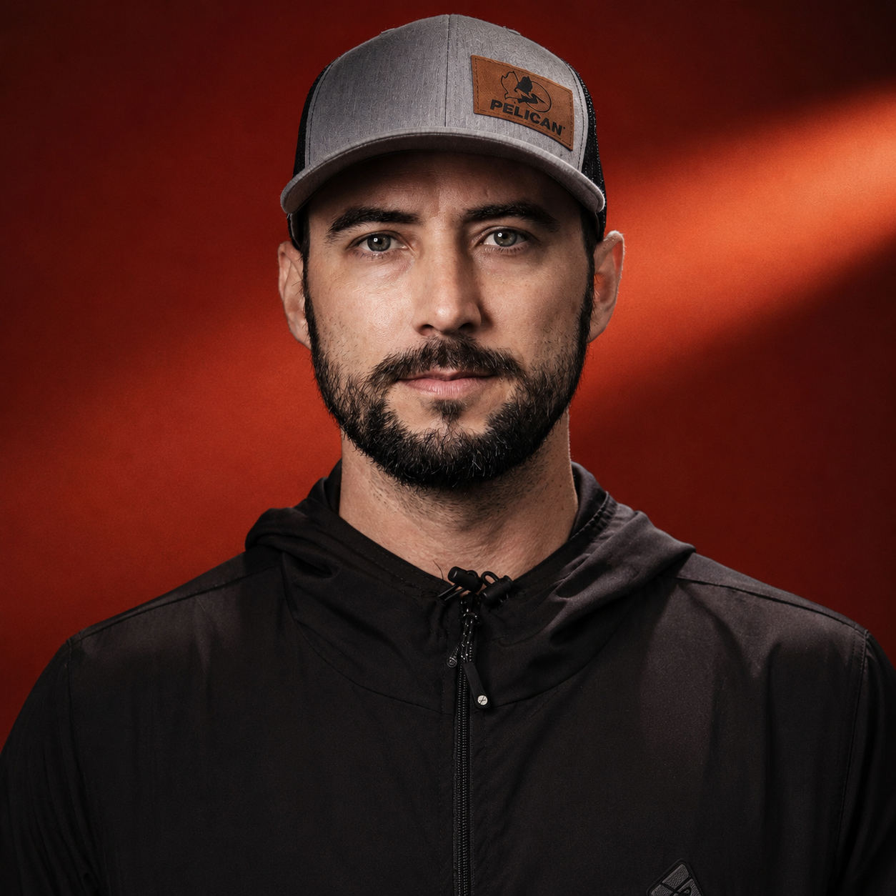
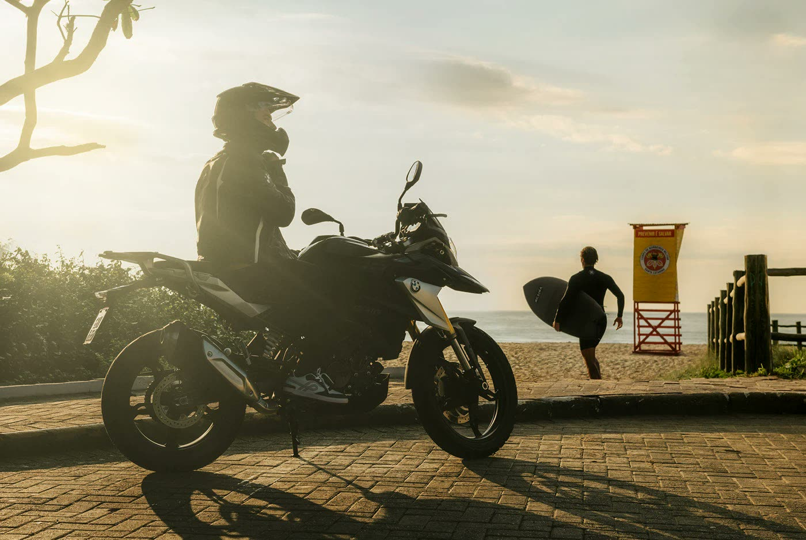
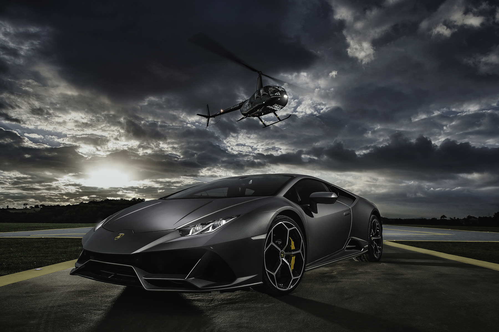
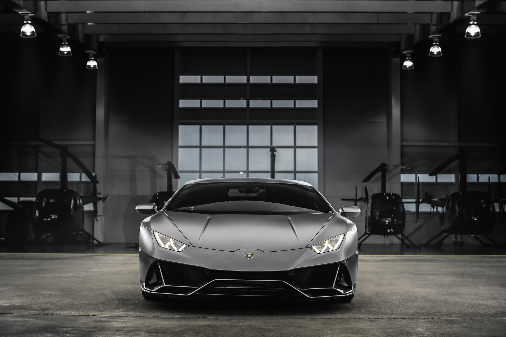
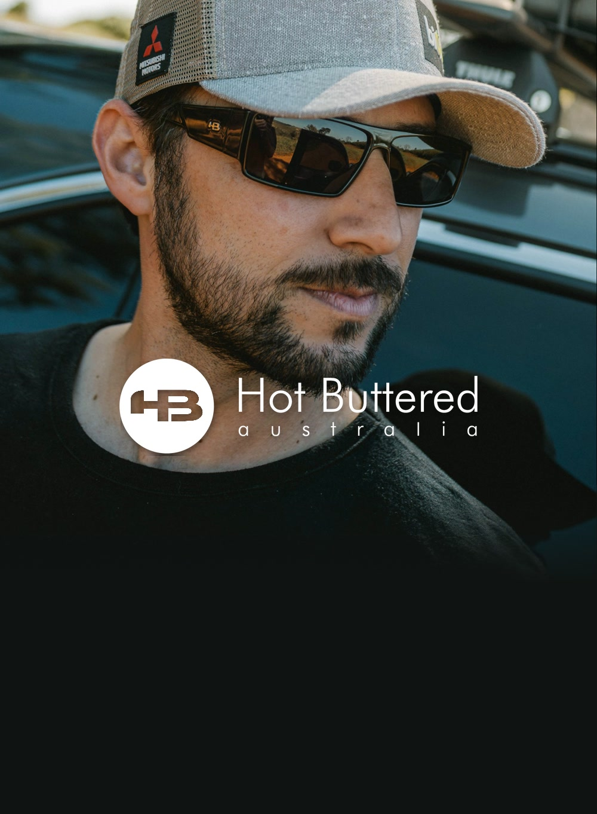

Media kit 2026
Fotografia e conteúdo para marcas que vão longe.
Fotógrafo comercial e creator nos universos automotivo, esportes, off-road, outdoor e lifestyle.
@pablovaz · pablovaz.com · vazphotography.com

Quem é
Pablo Vaz
Fotógrafo comercial há mais de duas décadas, com campanhas para Volvo Caminhões, BMW Motorrad, Mitsubishi, ESPN, Yamaha, Can-Am, Budweiser e Stella Artois.
Começou fotografando skate nas ruas, onde aprendeu movimento, timing e luz natural. Hoje leva esse olhar para a estrada como embaixador de marcas, criando conteúdo autêntico que nasce do uso real dos produtos.
- 23anos de fotografia publicitária
- 6marcas como embaixador
- BR + mundoatuação nacional e internacional

Projeto assinado
A Reconquista do Túnel Fábio Rego
Eu encontrei o túnel, criei a ideia e levei para a Mitsubishi. Virou o filme de lançamento da plataforma #4you4challenge: Lucas Fink, bicampeão mundial de skimboard, puxado por uma L200 Triton dentro de um túnel ferroviário alagado de 900 metros, em Jaguariaíva, no Paraná.
- 1,4 mivisualizações no canal oficial da Mitsubishi no YouTube
- 3filmes: trailer, filme e director’s cut
- 900 mde túnel alagado, com até 1 m de água
- Cliente
- Mitsubishi Motors do Brasil
- Agência
- Tech and Soul
- Produtora
- Sector One
- Idealização
- Pablo Vaz e Sector One
- Ano
- 2021
Na imprensa: AdNews, Cidade Marketing, ABC da Comunicação, Marcas pelo Mundo.
Projeto
BMW Motorrad G 310 GS
Mais de 10 filmes e diversas séries de fotos produzidas com a G 310 GS. Em destaque: parapente no Rio de Janeiro, praia e surf, estrada e um ensaio de estúdio da Triple Black. Também assinei a mostra fotográfica da marca no Pátio Batel, em Curitiba.
- 781 milvisualizações do filme de lançamento “Chegou a nova BMW G 310 GS” no canal oficial da BMW Motorrad Brasil
- +10filmes e diversas séries de fotos produzidas com a G 310 GS
- 2023mostra fotográfica “Uma história, incontáveis memórias” no Pátio Batel




Projeto
Lamborghini Huracán Evo com Godox
Um Huracán Evo, um helicóptero e um hangar, iluminados com flashes Godox AD300Pro. As fotos e o making of mostram o equipamento em uso real, do jeito que a marca quer ver. A Godox também publicou no canal global dela o meu filme “Skateboarding on Fire”.
- Marca
- Godox
- Carro
- Lamborghini Huracán Evo
- Equipamento
- Godox AD300Pro
- Entrega
- fotos, making of e vídeos no YouTube




Alcance
Uma audiência que acompanha a estrada.
Instagram @pablovaz
54,4 mil
seguidores
- 944 milvisualizações em 90 dias
- 147 milcontas alcançadas em 90 dias
- 28,5 milinterações em 90 dias
das visualizações vêm de quem ainda não me segue
O conteúdo chega a gente nova, não só à base.YouTube
4,7 mil inscritos
401 mil visualizações
TikTok @pablovazfoto
17 mil visualizações no vídeo com Mitsubishi, Yokohama e biO2
Dados oficiais do Instagram Insights, YouTube Data API e TikTok Studio, coletados em 4 de novembro de 2026. Instagram: últimos 90 dias.
Público
Quem assiste.
Faixa etária
Três em cada quatro seguidores têm entre 25 e 44 anos.
Países
Cidades
Idiomas
Marcas
Embaixador de marcas que vivem a estrada.
Embaixador



Marcas com que já trabalhei


Formatos
O que eu entrego.
- 01
Reels e posts
Conteúdo nativo no feed do Instagram, com produto em uso real.
- 02
Stories
Bastidores, rotina e chamadas diretas, com link para a marca.
- 03
YouTube e TikTok
Vídeos de review, expedição e making of.
- 04
Fotografia para a marca
Imagens de campanha, catálogo e redes, com direitos de uso combinados.
- 05
Eventos e lançamentos
Cobertura e presença em test drives, feiras e ativações.
- 06
Embaixador de longo prazo
Parceria contínua, no dia a dia e nas viagens. Com a HB, são 15 anos juntos, desde 2011.
Valores sob consulta. Pacotes montados para cada campanha.

Vamos criar juntos?
instagram.com/pablovaz · youtube.com/pablovaz · tiktok.com/@pablovazfoto · pablovaz.com · vazphotography.com